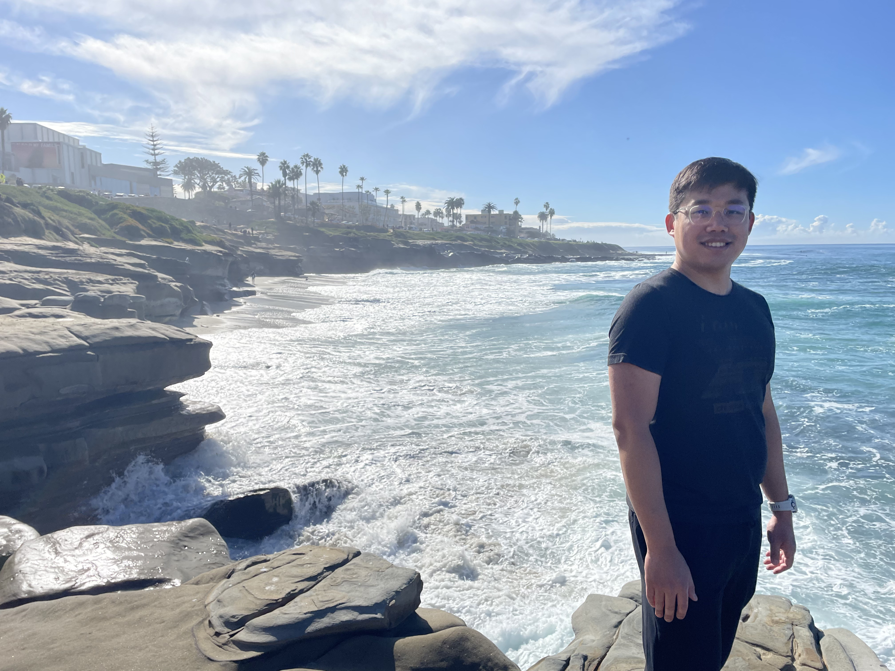

Yixiang Gao, Ph.D.
gradient descending through life 📈 📉
About Me

I am a Post-Doctoral Fellow at Missouri S&T specializing in robotics and AI for the mining industry. Under the guidance of Dr. Kwame Awuah-Offei, my research is centered on developing autonomous systems for miner search and rescue missions. This work integrates several key technologies such as Autonomous Navigation, Digital Twin, Computer Vision.
I earned my Ph.D. from University of Missouri - Columbia under the supervision of Dr. Gui DeSouza at the Vision Guided Intellegent Robotics Laboratory My doctoral research, supported by the NIH, pioneered machine learning applications for voice pathology, culminating in publications that bridge the fields of engineering and clinical science.
Currently, I am interested in
- Differentiable Rendering and Simulations
- Continual Learning
- Edge AI
that can acceleate the real-world deployment of robotics. My work is driven by the conviction that the future of AI should be decentralized, efficient, and accessible to everyone, not confined to the cloud.
Bios
2024 - Current
Post-Doctoral Fellow, Mining and Explosive Engineering Missouri University of Science and Technology

2017 - 2024
Ph.D. Electrical and Computer Engineering
Thesis: Confounded Predictions in Machine Learning
University of Missouri - Columbia
For a detailed overview of my work and experience, please see my full Curriculum Vitae.